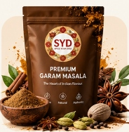

Royal Curry


Made with Royal Garam MasalaVelvety Shahi Paneer with Cardamom Bloom
Cubes of fresh malai paneer simmered in a silky tomato-cashew satin sauce, elevated with the sweet-spicy bouquet of slow-ground cardamom, star anise, and cloves.
👨🍳 Chef's Secret:
Add 1 tsp of SYD Royal Garam Masala in the last 2 minutes off the direct flame to lock in volatile cineole aromas.